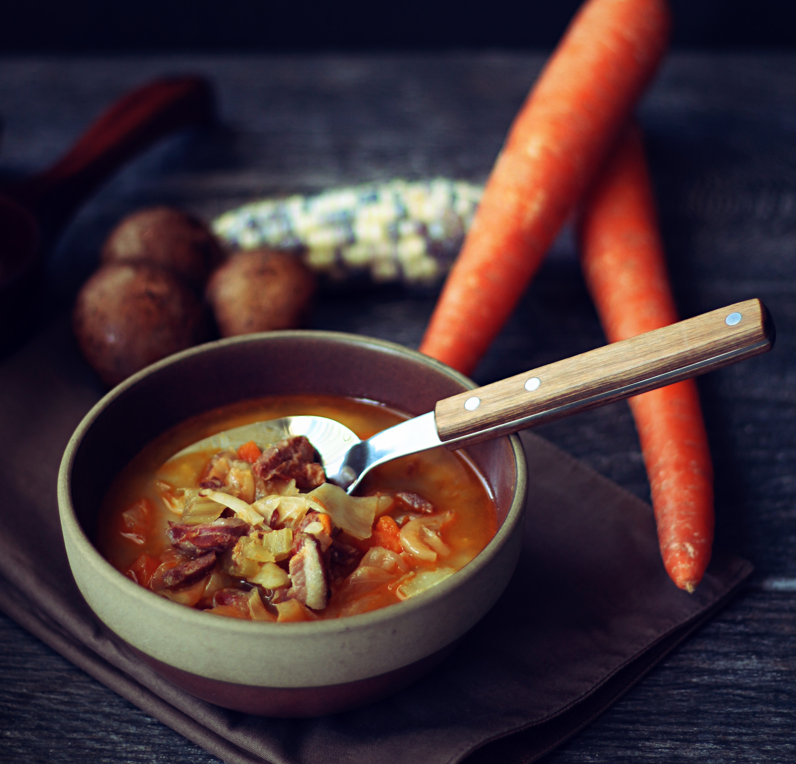

Farmer Maggot's Cabbage and Sausage

Desription
Merry: Don’t know why he’s so upset! It’s only a
couple of carrots.
Pippin: and some cabbages and those few bags of
potatoes that we lifted last week. And the mushrooms the week
before.
Merry: Yes Pippin, my point is, he’s clearly over
reacting! Run!
Ingredients
- 2 tbsp vegetable oil
- 3/4 pound smoked sausage casing removed
- 2 slices bacon 1/2" diced
- 1 medium red onion 1/2" diced
- 1 medium carrot peeled, 1/2" diced
- 1 rib of celery 1/2" diced
- 1 large russet potato peeled and cooked, 3/4" diced
- 1 small head of cabbage approximately 3 cups roughly
chopped
- 5 cups chicken or vegetable stock
- 1/3 cup heavy cream
Steps
- Heat a medium pot over medium heat with 2 tbsp of vegetable
oil.
- Add the bacon and sausage and brown. Set the sausage and bacon
aside while leaving the drippings in the pot.
- Keep the pot on medium heat and add the diced onions, carrots,
and celery. Cook for 10-15 minutes until soft.
- Return the sausage and bacon back into the pot along with the
potatoes and cabbage. Add the stock and let it simmer for 15-20
minutes until the cabbage is soft and tender.
- Taste to adjust with salt and pepper. Before serving, finish
with heavy cream.